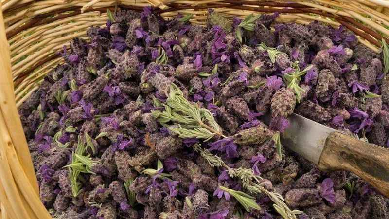
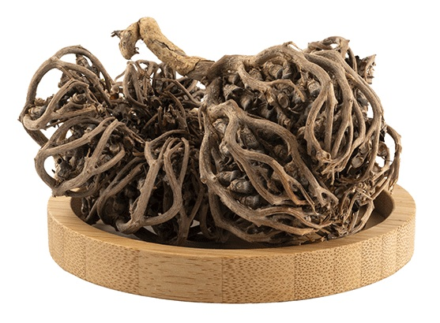
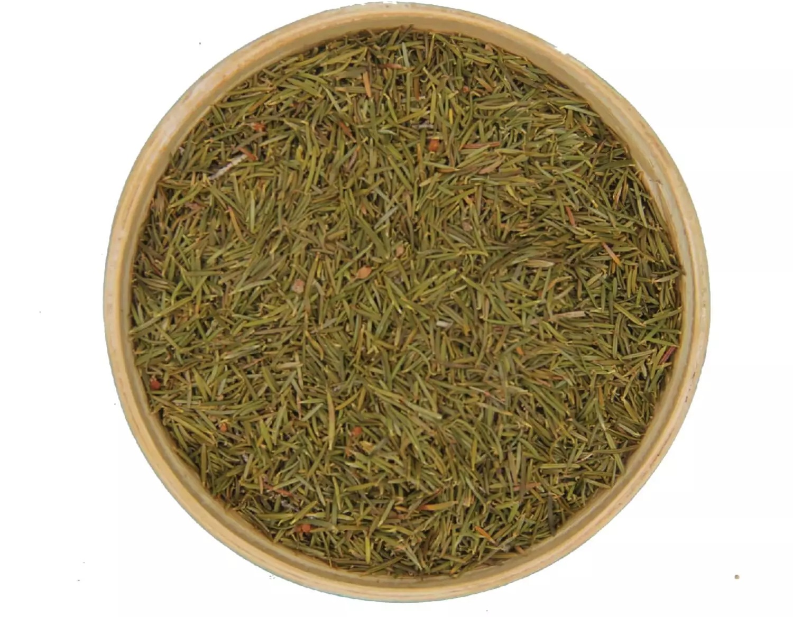
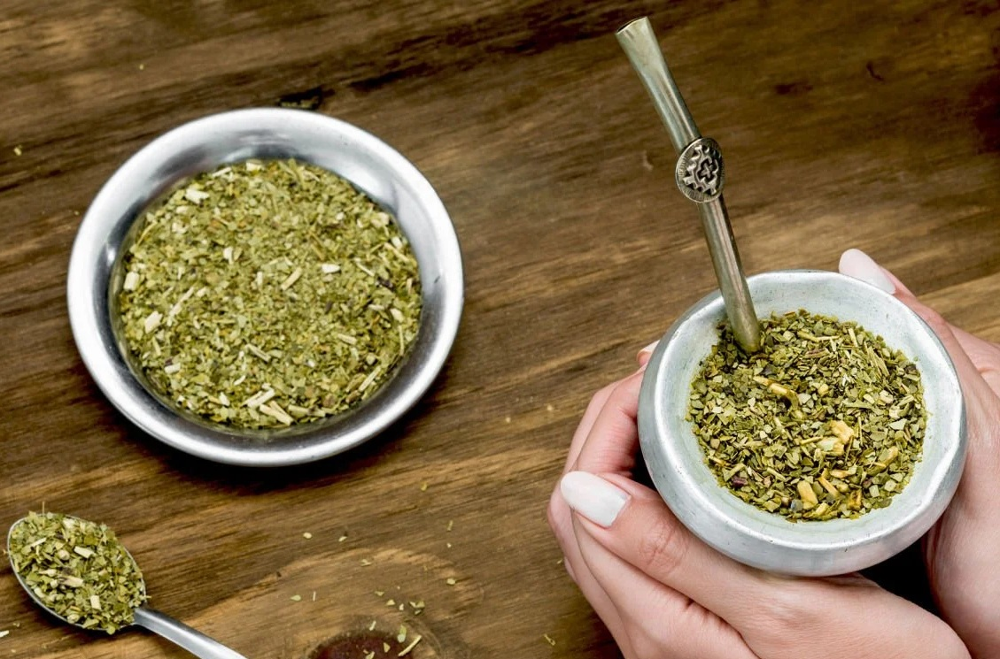
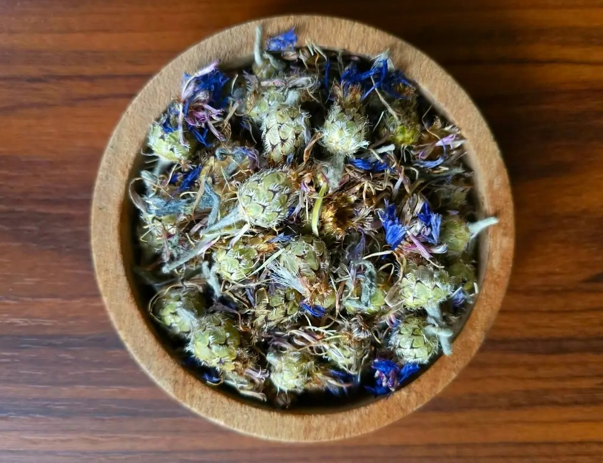
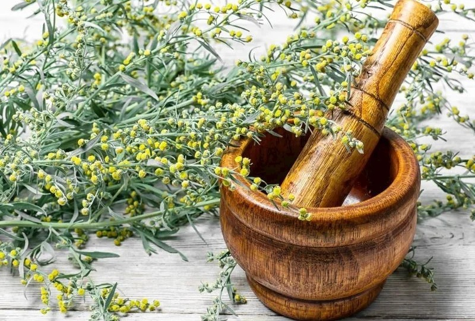
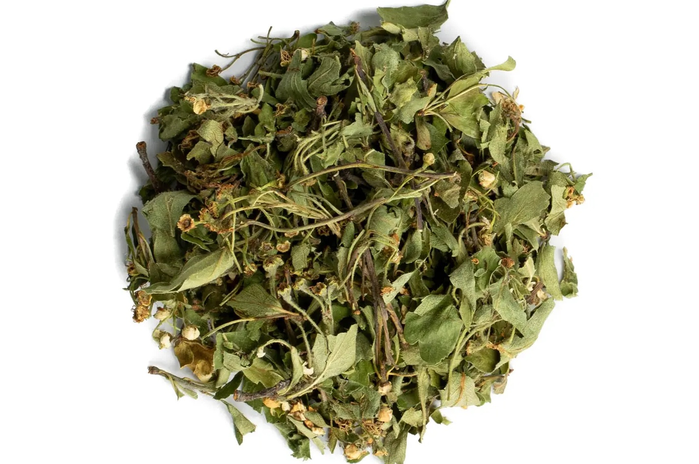
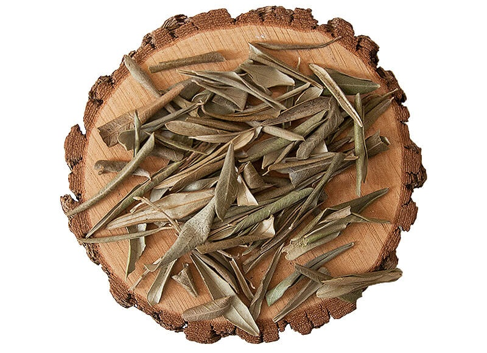

Aslan Pəncəsi
Qadınlarda aybaşı dövrü, hormonal balans və reproduktiv sağlamlıq üçün istifadə olunur.
Ətraflı incələ
Hayıt Toxumu
Qadın sağlamlığı - Hormonal tarazlığın dəstəklənməsi və menstrual dövrün tənzimlənməsi.
Ətraflı incələ
Yakı Otu - иван-чай
Prostat böyüməsini ləngidir, sidik problemlərini yüngülləşdirir və ağrını azaldır.
Ətraflı incələ
Karabaş Otu
Baş ağrısı, miqren, sinir sistemi və tənəffüs yolları üçün faydalıdır.
Ətraflı incələ

Çoban Çökərtən
Kişilərdə sperma keyfiyyətini və cinsi istəyi dəstəkləyən təbii vasitə.
Ətraflı incələ
Gingko Biloba
Beyin fəaliyyəti, yaddaşın gücləndirilməsi və qan dövranının yaxşılaşdırılması.
Ətraflı incələ
Altınbaşak Otu
Böyrəklərin təmizlənməsi, ödemlərin azalması və sidik yolları sağlamlığı.
Ətraflı incələ
Enginar Yarpağı
Qaraciyərin təmizlənməsi, toksinlərin atılması və öd ifrazının artırılması.
Ətraflı incələ
Şərbətçi Otu
Menopauza dövründə isti basmalar və PMS əlamətlərinin yüngülləşdirilməsi.
Ətraflı incələ
Çoban Çantası
Qanaxmaların dayandırılması, babasil və qadın sağlamlığı üçün istifadə olunur.
Ətraflı incələ
Sarı Ballı Baba
Böyrəklərin fəaliyyətini dəstəkləyir və iltihab əleyhinə təsir göstərir.
Ətraflı incələ
Solmaz Çiçəyi
Qaraciyər və öd kisəsi sağlamlığı üçün xalq təbabətində geniş istifadə olunur.
Ətraflı incələ

Aynısefa Çiçəyi
Boğaz ağrısı, ağız içi yaraları və diş əti problemləri üçün qarqara vasitəsi.
Ətraflı incələ
Avokado Yarpağı
Böyrək daşlarının əridilməsi və sidik yollarının təmizlənməsi üçün effektivdir.
Ətraflı incələ
Ekineziya Bitkisi
İmmunitet sistemini gücləndirən və soyuqdəymədən qoruyan təbii möcüzə.
Ətraflı incələ
Aclıq Otu
Təbii işlədici təsir göstərir, iştahın azalmasına və arıqlamağa kömək edir.
Ətraflı incələ

Kirkkilit - Qırxbuğum
Böyrək, sidik yolları və sümük sağlamlığını dəstəkləyən zəngin minerallı bitki.
Ətraflı incələ
Stevia
Təbii və kalorisiz şirinləşdirici. Qan şəkərini yüksəltmədən şəkəri əvəz edir.
Ətraflı incələ
Fatma Ana Əli Bitkisi
Qadın sağlamlığı, menstrual sancıların yüngülləşdirilməsi üçün istifadə olunur.
Ətraflı incələ
Funda yarpağı
Bədən müqavimətini artırır və saç tökülməsinin azalmasına kömək edir.
Ətraflı incələ

Mate çayı
Enerji verir, metabolizmanı sürətləndirir və arıqlamağa dəstək olur.
Ətraflı incələ
Zəncirotu - Karahindiba
Qaraciyəri təmizləyir, öd ifrazını artırır və həzmi yaxşılaşdırır.
Ətraflı incələ


Mersin Yarpağı
Nəfəs yollarını açır, bronxları rahatladır və antiseptik təsir göstərir.
Ətraflı incələ
Evkalipt Yarpağı
Soyuqdəymə, burun tutulması və öskürək zamanı buxar terapiyası üçün ideal.
Ətraflı incələ
Sarı Kantaron - Dazıotu
Depressiya, stress və gərginlik hallarında təbii sakitləşdirici.
Ətraflı incələ
Sinirli ot - Bağayarpağı
Öskürək əleyhinə və yaraların sağalması üçün istifadə olunan bitki.
Ətraflı incələ
Çarkıfelek (Passiflora)
Ürək döyüntüsünü tənzimləyir və dərin rahatlıq hissi bəxş edir.
Ətraflı incələ



Peygamber Çiçəyi
Göz yorğunluğu və göz sağlamlığı üçün kompres şəklində istifadə olunur.
Ətraflı incələ
Pelin Otu
İştahı açır və bədəndəki parazitlərin təmizlənməsinə kömək edir.
Ətraflı incələ



Alıç Yarpağı
Ürək əzələsini gücləndirir və qan təzyiqini stabilləşdirir.
Ətraflı incələ



Zeytun Yarpağı
Təbii antibiotik. İmmuniteti artırır və şəkəri tənzimləyir.
Ətraflı incələ